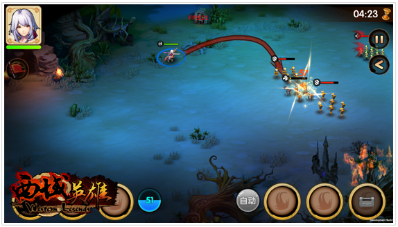
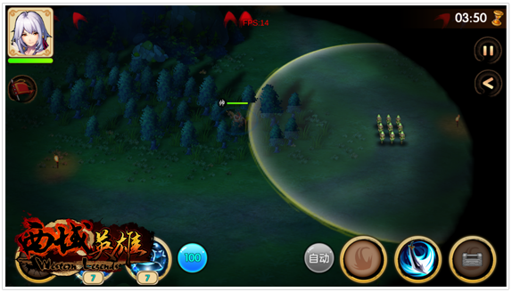
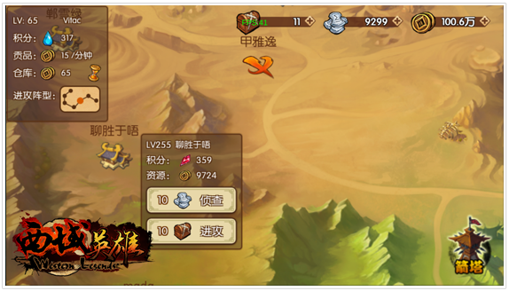
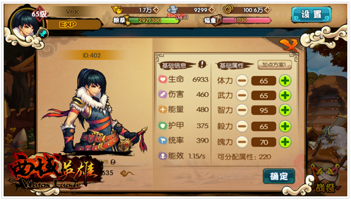
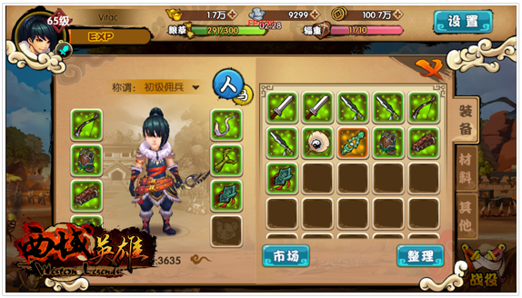
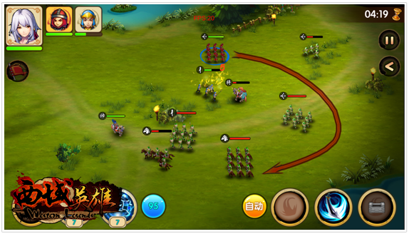
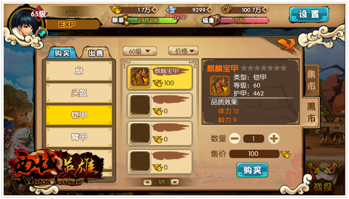

首页->正文内容
西域英雄手游曝光 重策略系统全揭秘
《西域英雄》作为一款实时策略类RPG游戏，其成长系统到战斗模式都相当完善并具有高度可玩性。到底《西域英雄》是一款怎样的游戏，今天小编为各位一一揭晓。
划线操作 开启真策略时代
《西域英雄》采用划线操作的战斗模式，玩家可以随心所欲地控制角色与兵团在战场上移动。隐藏，出动，放技能，一气呵成！兵分两路，迂回抄击，一切皆有可能！《西域英雄》让玩家感受真正的策略游戏。
不同于以往的割草，无脑杀怪游戏，《西域英雄》里有各种各样的战斗模式。单人剧情享受策略的快感、组队闯关感受团队的力量、潜逃模式展现高超的操作、解谜模式显露高端的智慧。
同时，《西域英雄》更有攻城战，建造属于自己的城池，构造独特的防御体系，在与其他玩家的攻防之间，体验网游的乐趣。
多维度成长 给玩家更多选择
不同于传统的RPG游戏，《西域英雄》丰富的策略元素也体现在成长方面，多维度的成长模式，让玩家有更多选择的同时，也更考验玩家在资源有限的情况下的抉择能力。 角色本身拥有属性成长，随着等级的提升，能够拥有更强大的能力。而属性的自由分配给了玩家更多的选择。红条超长的血牛、坚不可摧的肉盾、来去自如的刺客、奋勇向前的战士、威力强大的法师还是统帅全局的将军？不，在《西域英雄》里没有限制，上一刻你是冲锋在前的战士，下一秒就可化身统帅，眼观四面耳听八方发号施令！只要你有无限的想象力，《西域英雄》给你无限的可能！
角色装备玩家可以自行打造，也可以在黑市中购买其他玩家打造的装备。装备成长是角色实力提升的一大帮手。而随着等级的提升，玩家可以打造的装备也会越来越强大，同时高级别时，更有机会打造出传说级装备！
兵将相辅相成才能成就事业，兵团的成长是不可或缺的存在。骑兵冲刺杀敌、弓箭步百步穿杨、刀盾兵稳扎稳打、长枪兵突刺凶狠，不同兵种在不同的地形中总能发挥出乎意料的实力。
全球同服 高自由度告别单机网游
《西域英雄》从一开始就以全球同服的理念进行设计，并确定将采用大服制，拒绝滚服。同时在大服制的基础上，《西域英雄》从系统设计层面给老玩家和新玩家分别提供了自己的生存空间，杜绝了老玩家对新玩家不友好的碾压现象的发生，也防止了因滚服而造成的老玩家福利流失。 同时，《西域英雄》为了给玩家更真实的网游体验，让玩家之间的交互丰富起来，设立了独特的交易系统。无论是玩家打造的装备，还是在副本和活动中获得的物品，大部分为非绑定物品，玩家可以自由选择自用或者在黑市上出售。让玩家充分拥有合理分配资源的权力。
当卡牌遍地、挂机无敌的年代，《西域英雄》力争成为最真策略游戏的存在，为喜欢策略游戏的玩家体验到真正的策略游戏！